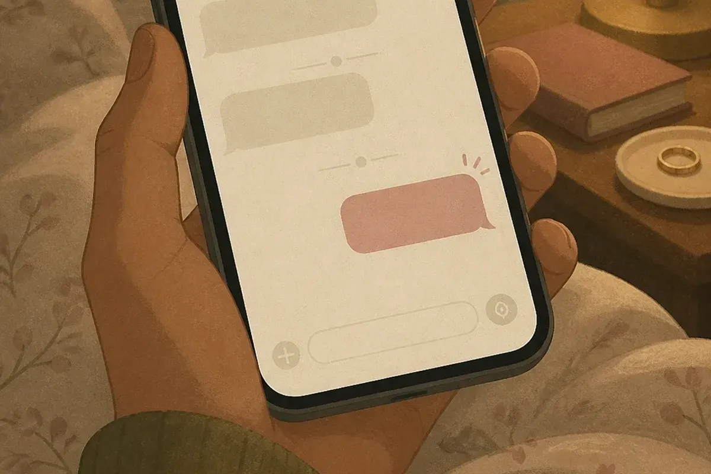

Có một kiểu quan hệ không tên: hai người nhắn tin đều đặn nhưng chẳng đi tới đâu, hẹn gặp thì toàn phút chót, hỏi “mình là gì của nhau” thì nhận về một câu đùa. Tiếng Anh gọi kiểu này là benching. Tiếng Việt mình hay nói gọn là mập mờ, hoặc thẳng hơn: bị giữ làm phương án dự phòng.
Bài này không kể lể. Nó trả lời bốn câu: benching là gì, làm sao nhận ra, vì sao người ta làm vậy, và bạn nên làm gì tiếp theo.
Benching là gì?
Benching là hành động giữ một người ở “ghế dự bị” trong chuyện tình cảm: không cắt đứt, không hẹn hò nghiêm túc, chỉ duy trì liên lạc vừa đủ để người đó không rời đi — phòng khi các lựa chọn khác của mình không thành. Từ này mượn hình ảnh bench (băng ghế dự bị) trong bóng đá, nơi cầu thủ ngồi chờ được gọi vào sân.
Người bench bạn không muốn mất bạn, nhưng cũng không muốn chọn bạn. Bạn được giữ lại vì tiện, không phải vì được ưu tiên.
Trong tiếng Anh, bench còn được dùng như động từ: “He’s benching me” (anh ấy đang để tôi ngồi dự bị), “Stop letting her bench you” (đừng để cô ấy giữ bạn làm dự bị nữa). Một nghĩa khác không liên quan là benching trong phòng gym — cách gọi tắt bài đẩy tạ nằm ghế (bench press). Bài này chỉ nói nghĩa thứ nhất.
Từ băng ghế dự bị đến chuyện hẹn hò
Từ này bắt đầu được dùng cho chuyện hẹn hò từ giữa thập niên 2010, khi các ứng dụng hẹn hò làm việc “giữ nhiều mối cùng lúc” trở nên dễ như vuốt màn hình. Cầu thủ dự bị ít nhất còn biết mình là dự bị. Người bị bench thì thường không — họ được cho vừa đủ hy vọng để tin rằng mình đang trên đường vào sân chính.
Điểm khác biệt quan trọng so với việc “tìm hiểu từ từ”: khi tìm hiểu, cả hai đều đang tiến lên, chỉ là chậm. Khi bị bench, chỉ có một người đang tiến, người kia đứng yên và thỉnh thoảng vẫy tay.
Vì sao benching ngày càng phổ biến?
Không ai thức dậy và quyết định sẽ giữ một người làm dự bị. Nó thường là kết quả của bốn thứ cộng lại:
- Ảo giác lựa chọn vô tận. Ứng dụng hẹn hò khiến người ta luôn có cảm giác “biết đâu người tiếp theo hợp hơn”. Cam kết với một người nghĩa là đóng lại hàng trăm khả năng khác — và nhiều người không chịu nổi cảm giác đóng cửa đó.
- Sợ trống trải hơn sợ làm tổn thương. Giữ bạn ở đó là một cách để họ không phải một mình vào những tối buồn, mà không cần trả giá bằng trách nhiệm.
- Thích cảm giác được cần đến. Mỗi tin nhắn bạn trả lời nhanh, mỗi lần bạn nhận lời hẹn phút chót, đều là một liều xác nhận nho nhỏ cho cái tôi của họ. Rẻ, và không hết hạn.
- Né tránh cuộc nói chuyện khó. Nói “mình không hợp” cần dũng cảm. Im lặng dần dần rồi thỉnh thoảng nhắn “dạo này sao rồi” thì không cần gì cả.
Hiểu lý do không phải để thông cảm. Là để bạn thấy rõ: chuyện này nói về họ, không nói về giá trị của bạn.
6 dấu hiệu bạn đang bị benching

Một dấu hiệu lẻ thì chưa nói lên gì — ai cũng có tuần bận. Nhưng nếu bạn gật đầu với từ ba điều trở lên dưới đây, và tình trạng kéo dài quá một tháng, thì đó không còn là bận nữa.
- Nhắn tin theo đợt, không theo nhịp. Biến mất ba ngày, rồi quay lại nhắn liên tục một buổi tối như chưa có gì xảy ra. Nhịp liên lạc phụ thuộc vào lịch trống của họ, không phụ thuộc vào bạn.
- Hẹn toàn phút chót. “Tối nay rảnh không?” lúc 7 giờ tối. Hiếm khi có một cuộc hẹn được đặt trước từ vài ngày — vì họ còn đang chờ xem có kế hoạch nào “hơn” không.
- Hủy hẹn nhưng không dời hẹn. Người thật sự muốn gặp bạn sẽ nói “thứ Tư không được, thứ Sáu nhé?”. Người bench bạn chỉ nói “để hôm khác” — và hôm khác không bao giờ có ngày cụ thể.
- Lảng mỗi khi chạm tới tương lai. Chuyện gặp bạn bè của nhau, chuyến đi cuối tháng, hay chỉ đơn giản là “mình đang là gì” — đều được trả lời bằng một câu đùa hoặc đổi chủ đề.
- Online nhiều, ngoài đời ít. Thả tim story đều đặn, trả lời tin nhắn ngọt ngào, nhưng số lần gặp mặt thật trong hai tháng đếm chưa hết một bàn tay.
- Bạn luôn là người chủ động. Thử im lặng một tuần. Nếu không ai nhắn, bạn đã có câu trả lời. Nếu có một tin nhắn “dạo này biến đâu mất” — cũng là câu trả lời, chỉ là kiểu khác.
Đề nghị một cuộc hẹn cụ thể, cách ít nhất 5 ngày: “Chiều Chủ nhật tuần sau, 4 giờ, quán X nhé?”. Người nghiêm túc sẽ nhận lời hoặc đề xuất giờ khác ngay. Người đang bench bạn sẽ nói “để xem đã” — vì họ chưa biết cuối tuần đó có gì “tốt hơn” không.
Benching bào mòn bạn như thế nào?
Bị từ chối thẳng thì đau, nhưng đau một lần rồi lành. Bị bench thì không có vết thương nào đủ lớn để bạn dừng lại — chỉ có hàng chục vết xước nhỏ mỗi tuần. Ba hệ quả hay gặp nhất:
Bạn bắt đầu thương lượng với chính mình
“Chắc tuần này họ bận thật.” “Mình đòi hỏi nhiều quá chăng?” Dần dần, bạn hạ chuẩn của mình xuống cho vừa với thứ họ đang cho — và quên mất mức ban đầu bạn từng cho là bình thường.
Bạn bỏ lỡ người đang thật sự đứng trước mặt
Năng lượng để ý điện thoại, đoán ý, chờ đợi — là năng lượng không còn dành cho công việc, bạn bè, hay một người khác tử tế hơn đang muốn được bạn để ý.
Bạn mang sự dè chừng sang mối quan hệ tiếp theo
Người bị bench lâu thường bước vào mối quan hệ sau với phản xạ “đừng tin vội”. Điều đó không sai, nhưng nó bắt người mới phải trả nợ cho người cũ.
Khi tình yêu đã rõ ràng
Templexa làm thiệp cưới online cho những cặp đôi đã đi qua giai đoạn “mình là gì của nhau”. Có đếm ngược, bản đồ, xác nhận tham dự — gửi qua Zalo là khách nhận ngay.
Benching, ghosting và breadcrumbing khác nhau ra sao?
Ba từ này hay bị dùng lẫn. Chúng giống nhau ở chỗ đều là cách không cam kết mà không cần nói ra, nhưng khác nhau ở mức độ liên lạc và mục đích:
| Kiểu | Họ làm gì | Bạn cảm thấy | Dấu hiệu đặc trưng |
|---|---|---|---|
| Ghosting | Biến mất hoàn toàn, không một lời | Hụt hẫng, không hiểu chuyện gì | Tin nhắn đã xem không trả lời, kéo dài vô hạn |
| Benching | Vẫn gặp, vẫn nhắn — nhưng chỉ khi họ rảnh | Lơ lửng giữa hy vọng và mệt mỏi | Hẹn phút chót, hủy không dời, lảng chuyện tương lai |
| Breadcrumbing | Thả tín hiệu nhỏ giọt: like, tin nhắn vu vơ | Được chú ý nhưng không bao giờ được gặp | Tương tác online đều, đề nghị gặp thật thì né |
Một cách nhớ nhanh: ghosting là cửa đóng, breadcrumbing là cửa hé nhưng không cho vào, benching là cho vào phòng chờ. Trong ba kiểu, benching gây hao tổn lâu nhất vì nó có đủ “bằng chứng” để bạn tự thuyết phục mình ở lại.
Cách không rơi vào ghế dự bị ngay từ đầu
Bạn không kiểm soát được người khác định làm gì, nhưng kiểm soát được mình chấp nhận gì. Bốn nguyên tắc dưới đây không giúp bạn “giữ” được ai — chúng giúp bạn lọc nhanh hơn.
1. Nhìn hành động, đừng nghe lời hứa
“Hôm nào đi ăn nhé” không phải một lời hẹn. Ngày, giờ, địa điểm mới là lời hẹn. Người muốn gặp bạn sẽ tự đưa ra ba thứ đó mà không cần bạn nhắc.
2. Nói rõ bạn đang tìm gì, sớm
Không cần long trọng. Một câu “mình không hợp kiểu mập mờ, nếu thấy hợp thì mình tìm hiểu nghiêm túc nhé” ở buổi thứ hai hoặc thứ ba là đủ. Người nghiêm túc sẽ thấy nhẹ nhõm. Người không nghiêm túc sẽ tự rút — và đó chính là mục đích.
3. Đừng lúc nào cũng rảnh
Không phải để chơi chiêu. Là vì bạn thật sự nên có lịch riêng, bạn bè riêng, việc riêng. Người có cuộc sống đầy sẽ khó bị đặt vào chế độ chờ — đơn giản vì họ không có thời gian để chờ.
4. Đầu tư cảm xúc theo tỉ lệ
Ba buổi cà phê chưa phải là một mối quan hệ. Hãy để mức quan tâm của bạn tăng theo mức quan tâm bạn nhận được, thay vì ứng trước rồi đợi người kia trả sau.
Đang bị benching: rút lui thế nào cho gọn?
Nếu bạn đã đọc tới đây và thấy mình trong đó, thì phần này là phần quan trọng nhất. Năm bước, theo đúng thứ tự:
- Gọi tên nó một lần. Tự nói với mình, thành lời: “Mình đang bị giữ làm dự bị.” Nghe nặng, nhưng đặt đúng tên giúp bạn ngừng tìm lý do hộ họ.
- Hỏi thẳng, một lần duy nhất. Không phải để họ đổi ý, mà để bạn không còn gì phải tự hỏi. Ví dụ tin nhắn:
“Mình quý bạn, nên mình muốn hỏi thẳng: bạn có muốn mình tìm hiểu nghiêm túc không? Nếu không thì cũng không sao, mình chỉ không muốn kéo dài kiểu này.”— Ngắn, không trách, không mở đường cho câu trả lời lửng lơ.
- Đọc câu trả lời đúng nghĩa của nó. “Để từ từ”, “giờ mình chưa nghĩ tới”, “mình cũng không biết nữa” — tất cả đều là không. Chỉ có “có” mới là có.
- Rút lui thật, không rút lui thử. Không cần block nếu bạn không muốn, nhưng phải ngừng chủ động, ngừng trả lời tin nhắn 11 giờ đêm, và ngừng nhận lời hẹn phút chót. Rút lui “thử” để xem họ có nhớ mình không — chỉ là một vòng benching mới do chính bạn mở.
- Lấp chỗ trống bằng thứ thật. Khoảng thời gian từng dành để chờ tin nhắn sẽ trống trong một hai tuần đầu. Điền vào đó trước khi nó tự điền bằng việc mở lại đoạn chat cũ.
Đừng gửi tin nhắn dài kể hết cảm xúc để “họ hiểu”. Họ hiểu từ lâu rồi. Tin nhắn dài chỉ cho họ thêm một bằng chứng rằng bạn vẫn ở đó.
Nếu chính bạn đang “bench” ai đó?
Bài này sẽ thiếu nếu chỉ nói từ một phía. Nếu bạn đang giữ một người mà bạn biết mình sẽ không chọn — vì họ dễ chịu, vì bạn chưa muốn một mình, vì cắt đứt thì ngại — thì bạn đang làm điều mà bạn không muốn ai làm với mình.
Cách sửa đơn giản hơn bạn nghĩ: nói thật, sớm, và ngắn. “Mình thấy hai đứa hợp làm bạn hơn, mình không muốn để bạn chờ.” Một câu đó khó nói trong 30 giây, nhưng đỡ cho người kia hàng tháng. Tử tế không phải là giữ người ta lại nhẹ nhàng — tử tế là để người ta đi rõ ràng.
Câu hỏi thường gặp
Benching có phải là bắt cá hai tay không?
Bị benching bao lâu thì nên dừng?
Nói chuyện thẳng thắn có làm họ bỏ đi luôn không?
Benching khác ghosting và breadcrumbing thế nào?
Lời cuối
Không ai đáng bị giữ trong phòng chờ của người khác. Nếu bạn đang ngồi đó, hãy đứng dậy — không phải vì bạn chắc chắn ngoài kia có ai tốt hơn, mà vì ở đây chắc chắn không có gì cho bạn. Và khi bạn gặp đúng người, bạn sẽ nhận ra ngay: với họ, bạn chưa bao giờ phải hỏi mình là gì của nhau.
Templexa
Đội ngũ làm thiệp cưới online tại Templexa — mỗi tuần trò chuyện với hàng chục cặp đôi sắp cưới, và viết lại những gì đã học được trong Cẩm nang cưới hỏi. Bài viết mang tính tham khảo, không thay thế tư vấn tâm lý chuyên môn.